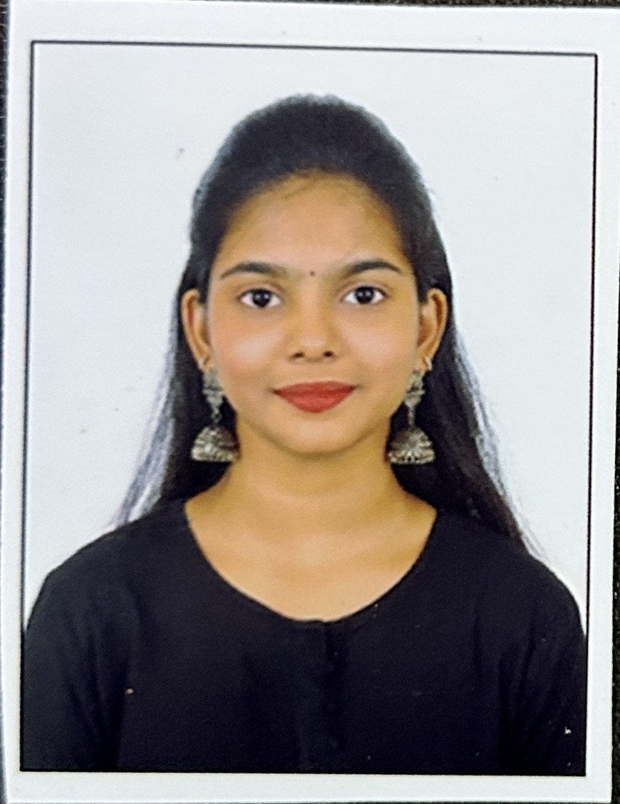

Deepika Prabhakaran

Summary
Iam a Passionate Engineering student with quest for knowledge and skills in this digitalized world
Experience
Java Developer , Nexilo Tech - Online Internship
11/03/2024 - 11/04/2024
- Developed applications (calculator, library management system, online banking system) usingJava Swing and MySQL, with features like login/register pages, account balance management, billpayments, and instant transfers.
Java Programming , Codsoft - Online Internship
25/01/2024 - 25/02/2024
- Developed applications including an ATM interface, student grade calculator, and number gameusing Java Swing and MySQL. Enhanced technical skills in Java Swing for front-end development, MySQL database integration, datahandling in JFrame, and effective use of Java libraries.
Projects
Library Management System, Full Stack|github link
-
Designed and implemented a Library Management System in Java with MySQL, creating adynamic UI with Java Swing, utilizing JDBC for seamless data integration and performing CRUDoperations.
Bank Management System, Full Stack|github link
- Developed a Bank Management System in Java Swing with MySQL for CRUD operations, login/registration,and frame transitions, integrating date/time libraries and image handling via JLabel.
Skills
- Languages : C programming, Java, Python, SQL, HTML5, CSS3, JavaScript.
- Tools : Git, GitHub, Linux, Figma, Canva.
- Interests : AI & ML, Coding, Reading and Writing, Learning Languages
- Communication :English , Hindi(Elementary), Tamil, Telugu
certifications
- Oracle Pl/Sql
- Oracle sql
- Codsoft Internship certificate
About Me|
Contact Me |
Linkedin|
Github
{kind=link}
{kind=link}
{kind=link}